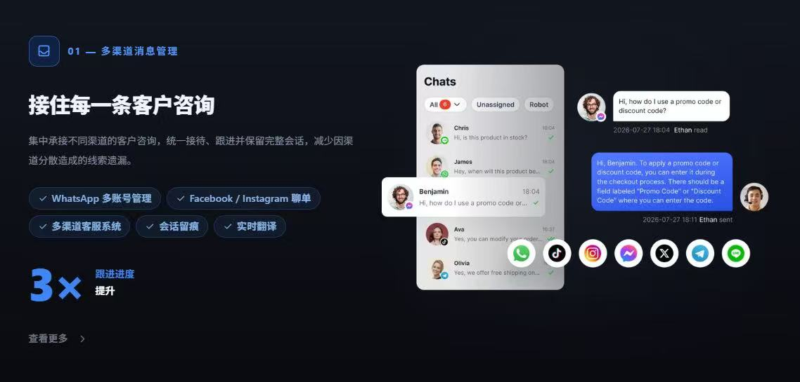
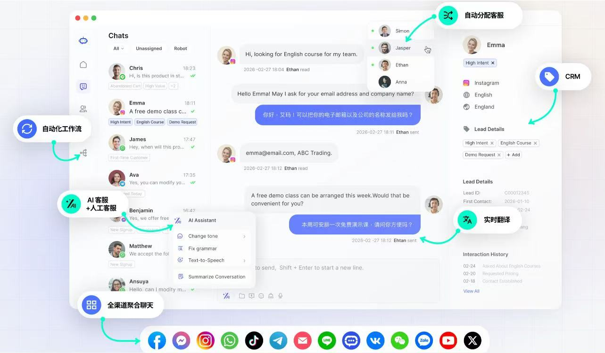
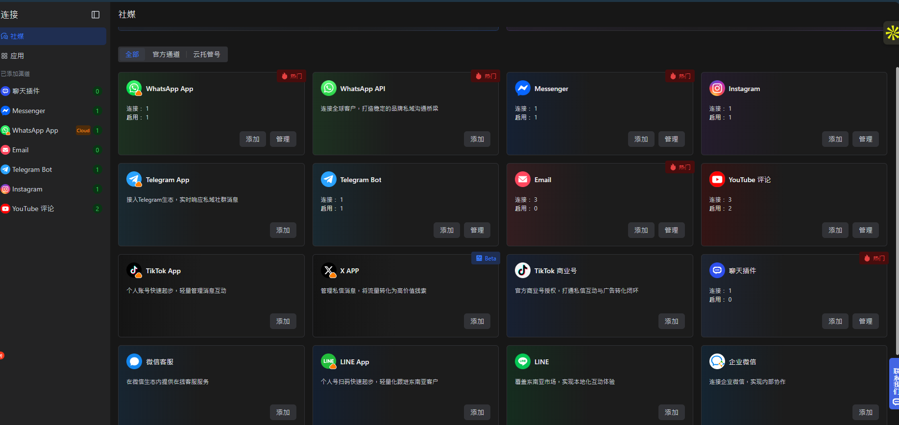

多渠道訊息入口
- 梳理 WhatsApp、Facebook Messenger、Instagram、TikTok、微信及網站聊天等現有入口。
- 確認哪些渠道可接入同一工作台，哪些需保留原平台操作。
- 標記訊息來源及未處理對話，減少跨平台遺漏。
 Smartech AIAI Academy
Smartech AIAI Academy
AI CUSTOMER SERVICE · HUMAN IN CONTROL
把 WhatsApp、Facebook、Instagram、TikTok、微信或網站的查詢整理到適合團隊的流程。先由清楚的知識庫回答常見問題，遇到複雜情況便交給真人跟進。Fion Tan 會按你的業務和現有帳戶規劃實際接入方式。
可用渠道、AI 能力及自動化程度，取決於選用平台、帳戶權限和雙方確認的方案。

FROM MESSAGE TO FOLLOW-UP
先把回覆規則和轉接責任說清楚，再決定哪些步驟適合自動化。
VISUAL REFERENCES
以下圖片展示訊息集中接待、對話分派及渠道管理的介面方向，方便你先理解服務場景。



圖片僅供了解介面與流程，包含第三方平台畫面；不代表 Smartech AI Academy 已完成所有渠道接入或與圖片所示平台合作。實際功能及畫面以確認的方案為準。
SERVICE MODULES
以下是可討論的功能清單；實際提供的渠道、數量與串接範圍會在開始前確認。
EXAMPLE WORKFLOW
例如客戶問「可以預約週六嗎？」AI 可先查找已確認的營業與預約資訊；若客戶提到退款、特殊療程或資料不足，便標記並交給負責同事。這是一個流程示意，非第三方平台或已交付系統的畫面。
客戶查詢 · 需要預約
BEFORE WE START
資料準備得越清楚，越容易判斷哪些問題適合自動回答，哪些必須由團隊處理。
SCOPE & SAFEGUARDS
平台與帳戶不同渠道的官方接口、審核、訊息規則及收費各不相同。微信、TikTok 等渠道能否接入，須先查核帳戶類型與選用平台的實際支援。
AI 與人工AI 回覆可能出錯，涉及付款、退款、法律、醫療、個人資料或重要承諾時應交由真人核對。知識庫更新和對話抽查需要持續進行。
客戶資料只收集業務必需的資料，按適用私隱要求處理同意、存取權限、保存期限及刪除。跨平台傳送資料前須核對權限。
功能方向參考 SaleSmartly 官網、AI 客服功能介紹及渠道列表。本頁為 Smartech AI Academy 的獨立服務說明；示意介面並非 SaleSmartly 截圖，亦不代表任何第三方合作或已完成接入。
LET'S MAP YOUR SUPPORT FLOW
告訴 Fion 你目前使用的渠道、最常被問的問題和客服人手，再討論適合的接待與轉人工流程。
服務標價 HK$6,000；每月維護費 HK$1,000。第三方平台、訊息用量與客製接入費用須另行確認。